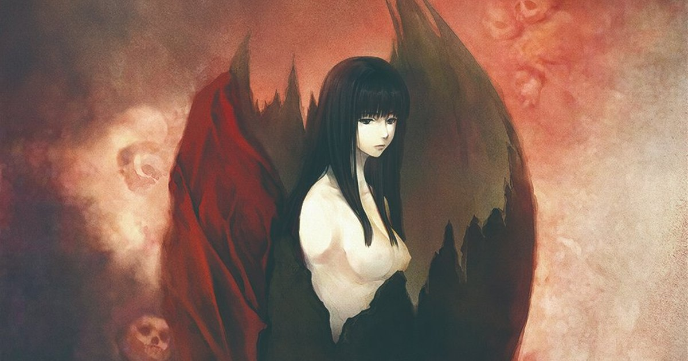
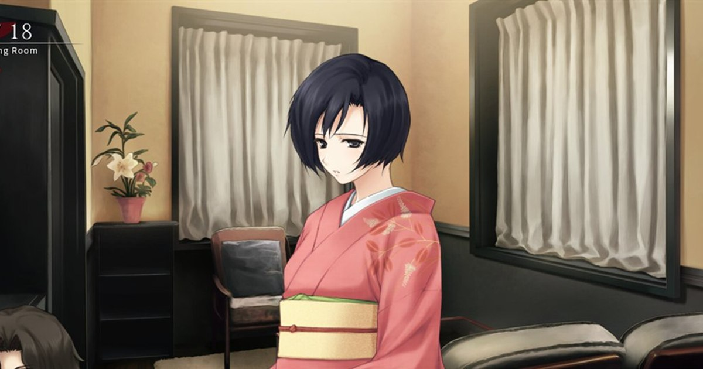
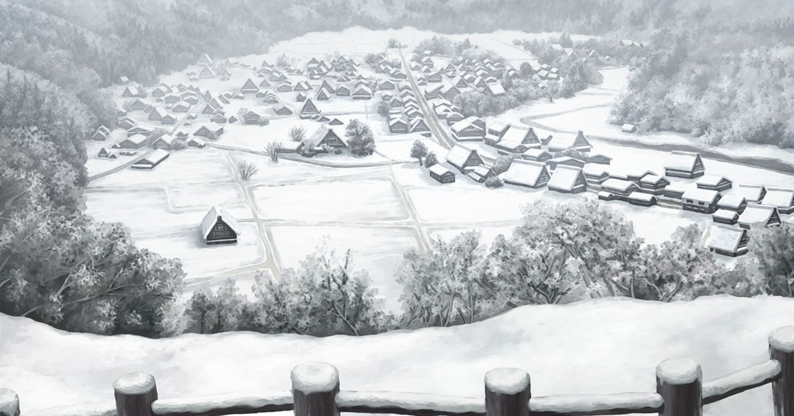
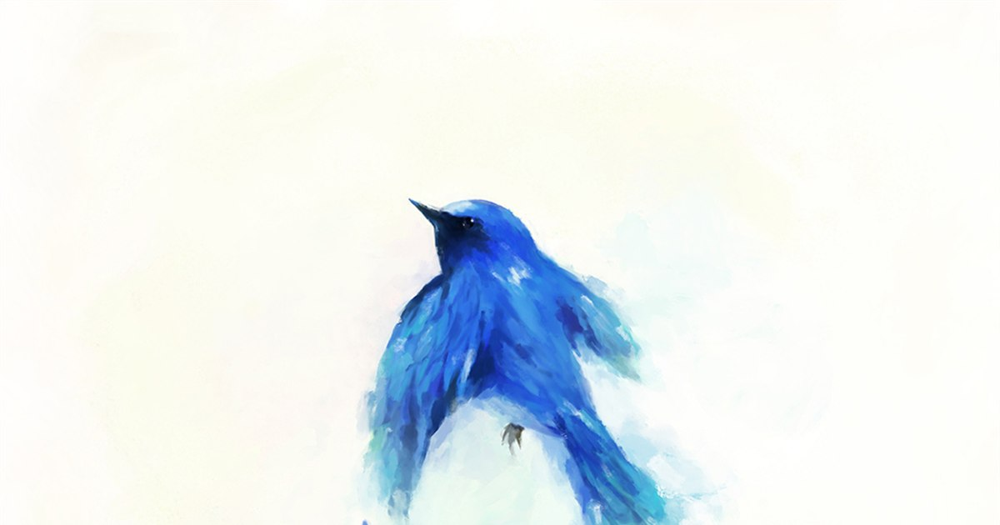
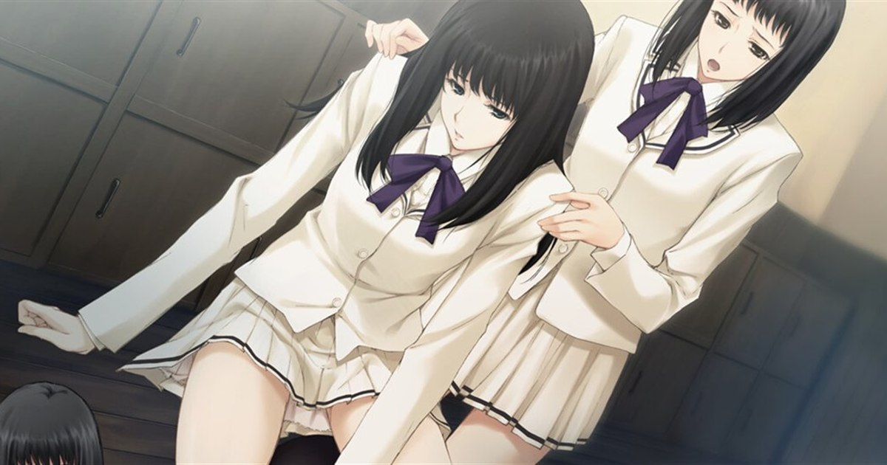

文章

《濡乌》访谈摘编：杉菜水姬谈绘画与来路
拳击、专门学校、被“绑架”到温泉的入社经历，以及“画只是游戏的一道工序”。

青鸟为始，星辰而终：《天之少女》系列解读摘编
三部曲的基础评价公开可读，主题与角色分析收在剧透折叠里。

真正的我到底在哪里：《壳之少女》偏执所导致的悲剧
一位玩家的通关感想：整体评价公开，真相与结局折叠防剧透。

《壳之少女》——宛若新生般的希冀
散文式的介绍：昭和三十一年的东京时代背景，开篇剧情折叠防剧透。

他人眼中的 Innocent Grey：摘录与链接
各平台对杉菜水姬与 Innocent Grey 的介绍、评价与感想摘录，附原文链接。

杉菜水姫的用色笔记：冷调、留白与窗边的光
从《カルタグラ》到《FLOWERS》，他为什么能把「安静」画得这么具体。

Innocent Grey 作品年表与海外版本动向
从 2004 年分社设立到 The Shell 三部曲上架 Steam，一份可以直接查的清单。

《殻ノ少女》三部曲：越画越冷的冬天
雪、旧宅与昭和气质——三部曲里原画的变化轨迹。
这个分类下暂时还没有文章。